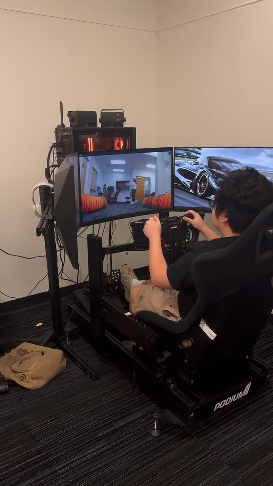
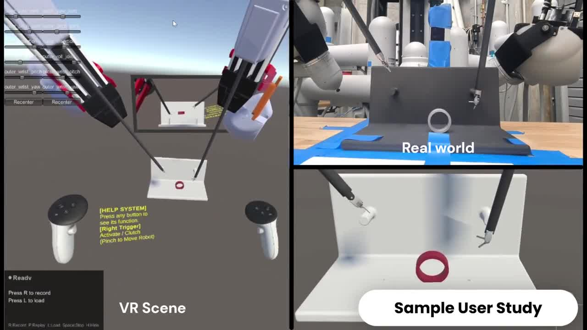
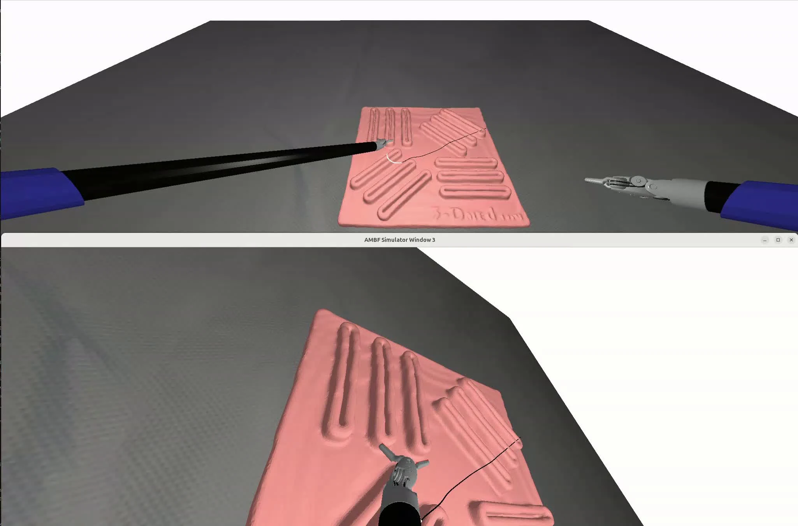
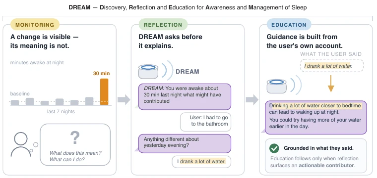
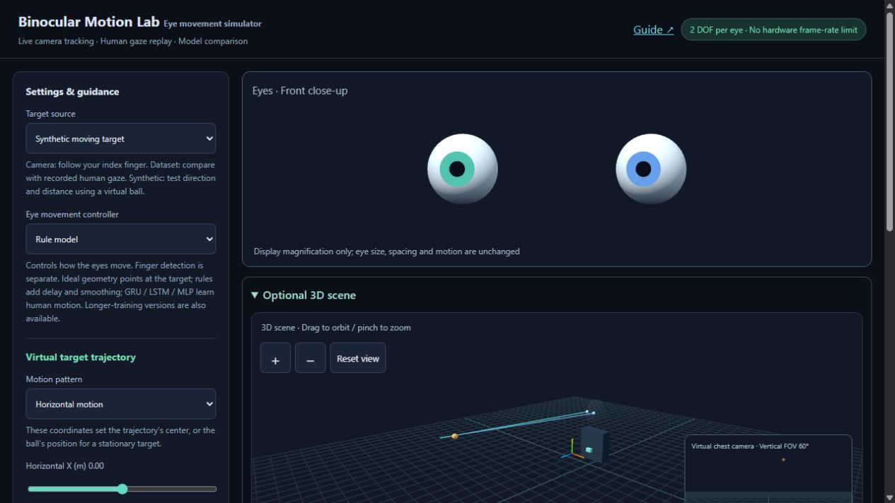
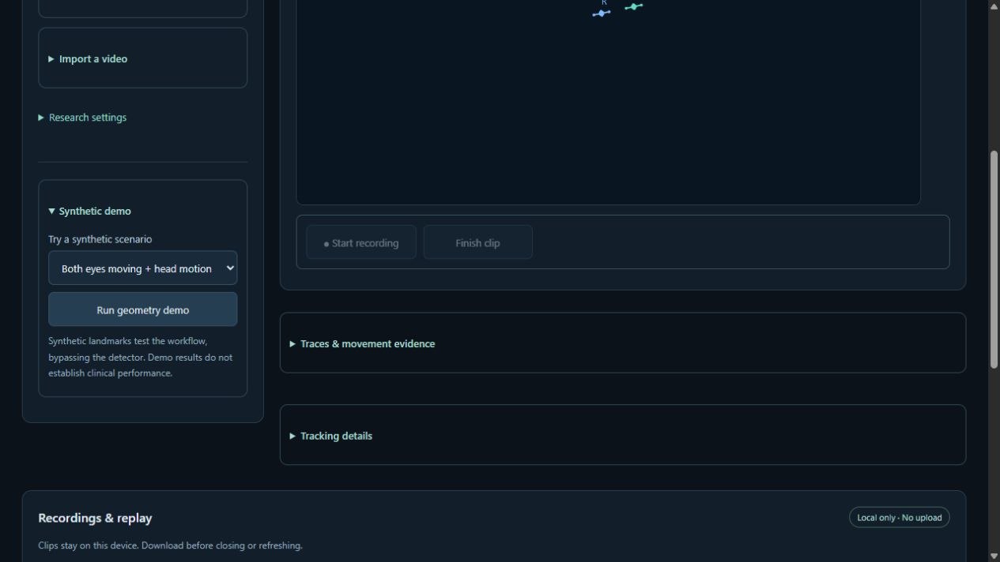

Alliance AI Lab
Johns Hopkins University
Research Assistant · Prof. Haimin Hu
ROBOTICS · HUMAN–ROBOT INTERACTION · AI FOR HEALTH
Building robots that learn from people
and interact with the world.
My research connects multimodal human–robot interaction, surgical robot learning, and computational sensing. I received my M.S.E. in Computer Science from Johns Hopkins University in May 2026, following a double major in Pure and Applied Mathematics and Computer Science at Boston University.
People and places shaping my work.
Johns Hopkins University
Research Assistant · Prof. Haimin Hu
Baltimore, Maryland, USA
Research Intern · Dr. Kemar Green
Johns Hopkins University
Research Assistant · Prof. Peter Kazanzides
Johns Hopkins University
Research Assistant · Prof. Chien-Ming Huang
IDEAS, SYSTEMS & EXPERIMENTS
Select a project to explore the story, workflow, and demos.
8 projects shown

Video & projectrobotics
Ongoing · Alliance AI Lab, Johns Hopkins University
robotics
Manuscript in preparation · Target: Robotics: Science and Systems (RSS)

Video & projectrobotics
Accepted · IEEE/RSJ International Conference on Intelligent Robots and Systems (IROS), 2026

Video & projectrobotics
Manuscript in preparation · Target: IEEE Robotics and Automation Letters (RA-L)
 Explore project
Explore project AI FOR HEALTH
ACM HEALTH · Major revision / CHI 2027 · Under review

Explore projectAI FOR HEALTH
Under review · ACM Conference on Human Factors in Computing Systems (CHI), 2027

Interactive demointeractive
NeuroAgent AI · Research prototype

Interactive demointeractive
NeuroAgent AI · Research prototype
* Equal contribution
IROS 2026 · Accepted
C. Liu*, C. Yu*, H. Zhao*, H. Ding, H. Wei, A. Munawar, M. Unberath, and P. Kazanzides.
ACM HEALTH · Major revision
A. Mahmood*, B. Kim*, H. Zhao, M. E. Atwood, L. F. Buenaver, M. T. Smith, and C.-M. Huang.
CHI 2027 · Under review
B. Kim*, A. Mahmood*, H. Zhao, M. E. Atwood, L. F. Buenaver, Z. Xiao, and C.-M. Huang.
CHI 2027 · Under review
A. Mahmood, B. Kim, H. Zhao, M. E. Atwood, L. F. Buenaver, M. T. Smith, and C.-M. Huang.
H. Zhao, V. Kamath†, S. Terala†, and U. Tumerdem.
In preparation for submission to IEEE Robotics and Automation Letters (RA-L). † Equal second authorship.
H. Zhao*, N. Baek*, S. Hu, Y. Wang, B. Qu, and H. Hu.
In preparation for submission to Robotics: Science and Systems (RSS).
Working titles; these manuscripts have not yet been submitted.